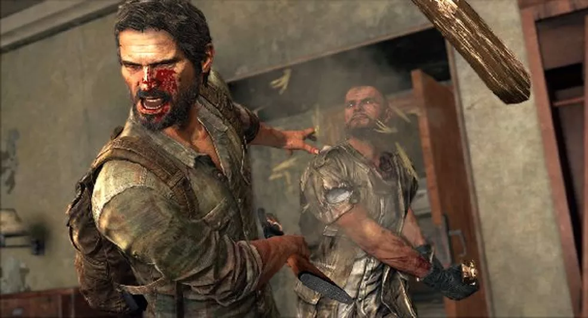
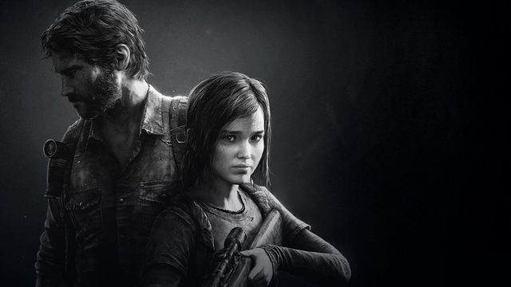

The Last of Us: o jogo que transformou a dor em narrativa
O lançamento de um jogo que mudou a indústria
Quando foi lançado em 2013 pela Naughty Dog para o console PlayStation 3, The Last of Us rapidamente deixou de ser apenas “mais um jogo de sobrevivência”. Em uma época em que muitos títulos apostavam em ação exagerada, explosões constantes e protagonistas quase invencíveis, o jogo surgiu indo na direção contrária. Ele desacelerava o jogador, obrigava cada decisão a ter peso e colocava a narrativa acima da simples diversão imediata.
O primeiro impacto já acontecia nos minutos iniciais. Em vez de começar com um herói armado enfrentando monstros, o jogador acompanhava uma cena extremamente humana: uma família tentando sobreviver ao caos repentino do início da infecção. Esse começo não era apenas dramático; ele servia para mostrar que o foco da obra não seria o vírus em si, mas as pessoas destruídas emocionalmente pelo mundo ao redor.
Na época do lançamento, muitos críticos e jogadores perceberam que estavam diante de algo diferente. Não era só pela qualidade gráfica ou pela jogabilidade refinada, mas pela maneira como o jogo fazia o jogador sentir desconforto, tristeza e tensão emocional quase o tempo todo.

Uma história sobre sobrevivência, perda e esperança
Lançado em 2013, The Last of Us apresenta um mundo devastado por uma infecção causada por um fungo que transforma seres humanos em criaturas agressivas. Após o colapso da sociedade, cidades inteiras foram abandonadas, governos deixaram de funcionar e a sobrevivência passou a ser o principal objetivo da humanidade.
A história acompanha Joel, um sobrevivente marcado por traumas profundos e anos vivendo em um ambiente extremamente hostil. Sua vida muda quando ele recebe a missão de escoltar Ellie, uma adolescente que pode representar a última esperança para encontrar uma solução para a infecção. O que inicialmente parece ser apenas uma tarefa se transforma em uma longa jornada através de cidades destruídas, florestas abandonadas e comunidades que tentam sobreviver em meio ao caos.
Durante a viagem, Joel e Ellie enfrentam não apenas os infectados, mas também outros sobreviventes que, muitas vezes, podem ser ainda mais perigosos. Em um mundo onde recursos são escassos e a confiança é rara, cada encontro se torna uma questão de vida ou morte. Entretanto, apesar dos perigos constantes, o verdadeiro foco da história não está nos monstros ou na ação, mas sim na relação construída entre os dois protagonistas.
Grande parte dos jogos utiliza a narrativa apenas como uma justificativa para a ação. Em The Last of Us, acontece exatamente o contrário: a ação existe para fortalecer a narrativa. Cada combate, cada exploração e até mesmo os momentos de silêncio possuem importância emocional dentro da história.
Joel está longe de ser um herói tradicional. Ele é um homem emocionalmente destruído, endurecido por perdas e pelas dificuldades de sobreviver em um mundo brutal. Já Ellie representa algo raro naquele universo: esperança. A relação entre os dois se torna o coração da obra e é o elemento que conduz toda a narrativa.
Um dos aspectos mais interessantes do jogo é a construção de seus personagens. Eles não são perfeitos nem idealizados. Pelo contrário, são pessoas cansadas, traumatizadas, agressivas e muitas vezes egoístas. Essa imperfeição torna seus comportamentos mais humanos e faz com que o jogador se conecte com eles de maneira mais profunda.
Ao longo da jornada, pequenos diálogos acabam sendo tão importantes quanto as grandes cenas cinematográficas. Uma conversa durante uma caminhada, uma piada feita por Ellie ou até mesmo um silêncio desconfortável revelam muito sobre o estado emocional dos personagens. Esses detalhes ajudam a construir uma relação que parece real e fazem com que o jogador acompanhe o desenvolvimento dos protagonistas de forma natural.
Outro ponto que fortalece a narrativa é a ausência de respostas simples. O jogo constantemente apresenta dilemas morais complexos, nos quais não existe uma escolha claramente correta. Em muitos momentos, os personagens precisam tomar decisões difíceis para sobreviver, levando o jogador a refletir sobre os limites da ética em situações extremas.
Por essa combinação de narrativa envolvente, personagens marcantes e temas profundamente humanos, The Last of Us se tornou muito mais do que um jogo de sobrevivência. A obra é lembrada como uma das histórias mais impactantes dos videogames, mostrando que jogos também podem emocionar, provocar reflexões e contar histórias tão poderosas quanto as encontradas no cinema e na literatura.
A sensação de angústia constante
Um dos aspectos mais marcantes de The Last of Us é a sensação permanente de angústia. Mesmo nos momentos de calmaria, o jogador sente que algo ruim pode acontecer a qualquer instante. Isso acontece por vários fatores trabalhando juntos.
Primeiro, existe a escassez de recursos. O jogador quase nunca se sente totalmente preparado. Falta munição, falta cura e falta segurança. Diferente de outros jogos onde o personagem se torna extremamente poderoso, aqui o jogador permanece vulnerável do início ao fim. Além disso, o som tem papel fundamental. Muitas áreas são silenciosas de maneira desconfortável. Em outras, os ruídos dos infectados criam tensão antes mesmo do combate começar. O jogo entende que o medo psicológico é mais eficiente do que sustos baratos.
A violência também contribui para essa sensação estranha. Os confrontos não parecem “divertidos”. Os golpes são pesados, brutais e muitas vezes desconfortáveis de assistir. O jogador sente o peso físico e emocional da sobrevivência. Outro detalhe importante é que o jogo raramente oferece descanso emocional. Quando o jogador começa a se sentir confortável, a narrativa apresenta novos traumas, perdas ou situações desesperadoras.
Esse fenômeno é curioso porque, teoricamente, jogos costumam buscar entretenimento leve ou sensação de poder. The Last of Us faz exatamente o oposto: ele cria desconforto emocional e transforma isso em uma experiência memorável.

Por que sentir desconforto acabou funcionando?
Existe algo quase contraditório no sucesso de The Last of Us. O jogo deixa o jogador triste, angustiado e emocionalmente cansado em vários momentos. Mesmo assim, milhões de pessoas se conectaram profundamente com a experiência. Isso acontece porque o desconforto não é vazio. Ele possui propósito narrativo. O jogador sofre junto com os personagens. As perdas possuem consequências reais. As mortes não são esquecidas minutos depois. O medo constante faz o jogador entender como seria viver naquele mundo.
Essa conexão emocional cria uma imersão muito mais forte do que apenas gráficos bonitos ou mecânicas avançadas. Muitas pessoas terminaram o jogo refletindo sobre moralidade, sobrevivência, amor e egoísmo. Outro ponto importante é que o jogo respeita a inteligência do jogador. Ele não explica tudo de maneira exagerada. Muitas emoções são transmitidas através do silêncio, das expressões faciais e do ambiente.
O resultado foi uma obra que ultrapassou a ideia tradicional de videogame e passou a ser discutida como experiência narrativa comparável a filmes e séries.
O impacto cultural de The Last of Us
Depois do lançamento, The Last of Us passou a ser usado como referência quando o assunto era narrativa nos videogames. O jogo ajudou a fortalecer a ideia de que videogames poderiam contar histórias emocionalmente complexas sem perder a interação característica da mídia. Além disso, influenciou diversos títulos posteriores que passaram a investir mais em desenvolvimento emocional de personagens.
Anos depois, a adaptação em série mostrou que a força da narrativa funcionava também fora dos videogames. Isso ajudou ainda mais a popularizar a franquia e apresentar sua história para pessoas que nunca haviam jogado. Mesmo mais de uma década após o lançamento original, o jogo continua sendo discutido justamente por aquilo que o tornou especial: sua capacidade de provocar emoções intensas.
